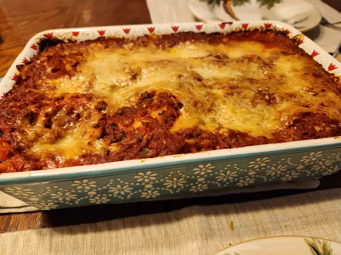

Lasagna Recipe

Description
Lasagna is a classic Italian dish made with layers of pasta, meat sauce, and cheese.
It is a hearty and comforting dish that is perfect for family dinners or special occasions.
This lasagna recipe features a rich and flavorful meat sauce, creamy ricotta cheese, and melted mozzarella on top.
It is sure to be a crowd-pleaser!
Ingredients
- 1 pound ground beef
- 1/2 cup diced onion
- 2 cloves garlic, minced
- 1 can (28 ounces) crushed tomatoes
- 1 can (6 ounces) tomato paste
- 1/2 cup water
- 2 teaspoons dried basil
- 2 teaspoons dried oregano
- 1 teaspoon salt
- 1/2 teaspoon black pepper
- 1/4 teaspoon red pepper flakes (optional)
- 12 lasagna noodles, cooked and drained
- 3 cups shredded mozzarella cheese
- 1 1/2 cups ricotta cheese
- 1/2 cup grated Parmesan cheese
- 2 tablespoons chopped fresh parsley
Instructions
- In a large skillet, cook the ground beef, onion, and garlic over medium heat until the meat is browned and the onion is tender. Drain off any excess fat.
- Add the crushed tomatoes, tomato paste, water, basil, oregano, salt, pepper, and red pepper flakes to the skillet. Stir to combine. Bring the mixture to a simmer and cook for 10 minutes, stirring occasionally.
- Preheat the oven to 375°F (190°C). In a 9x13-inch baking dish, spread a thin layer of the meat sauce on the bottom. Arrange 4 lasagna noodles on top of the sauce. Spread 1/3 of the ricotta cheese over the noodles, then sprinkle with 1 cup of mozzarella cheese. Repeat the layers two more times, ending with a layer of meat sauce on top.
- Sprinkle the Parmesan cheese over the top of the lasagna. Cover the dish with aluminum foil and bake for 25 minutes.
- Remove the foil and bake for an additional 25 minutes, or until the cheese is melted and bubbly. Let the lasagna stand for 10 minutes before serving. Sprinkle with chopped parsley before serving.